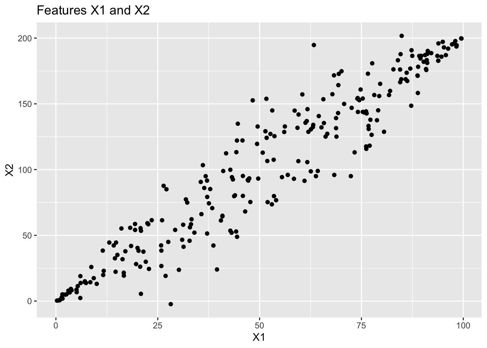
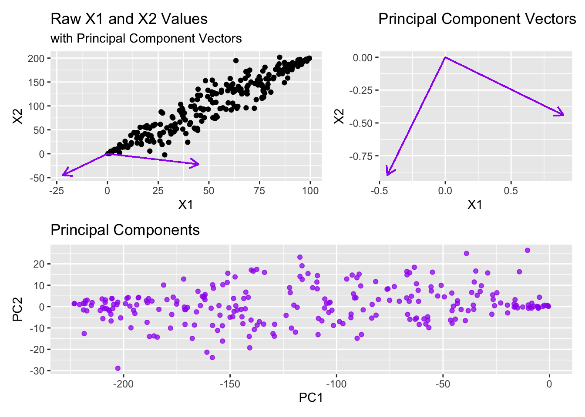
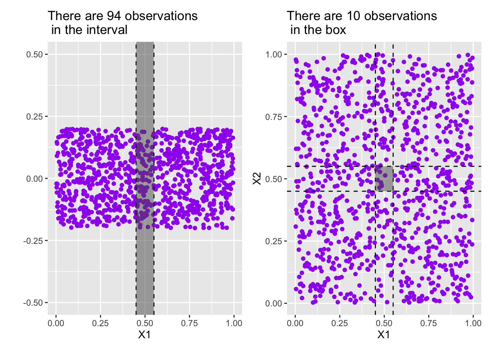

Introduction to Principal Component Analysis (PCA)
Purpose: In this notebook we’ll introduce the notion of Principal Component Analysis (PCA) for dimension reduction. In particular we’ll see
- High-dimensional data (data with lots of features) presents challenges associated with overfitting and often the presence of multicollinearity (correlated predictors).
- Often times we can take a few orthogonal linear combinations of our features and still maintain much of the variability in the original data. These orthogonal linear combinations are known as principal components.
- By using principal components rather than raw features, we can reduce the number of features we use to model our response without losing predictive value.
The Big Idea
We’ll start with a very simple, small example with just two features since that is easy to visualize.
Looking at the plot, you may notice that X1 and X2 are correlated with one another. If you’ve taken linear algebra, you may be able to recognize that basis vectors corresponding to X1 (that is, \(\left[\begin{array}{c} 1\\ 0\end{array}\right]\)) and X2 (that is, \(\left[\begin{array}{r} 0\\ 1\end{array}\right]\)) are perhaps not optimal for representing this data. Principal components analysis is a method for changing to a more appropriate basis. If you haven’t taken linear algebra, then all you need to know is that Principal Components are a way to more efficiently encode our data, while maintaining as much of the variability as possible.
The first principal component will identify the direction through the “scattercloud” of data which captures as much of the variability as possible. In some sense, you can think of this as the first principal component finding the direction of the longest “diameter” through the scattercloud. The second principal component will do the same thing, but with the restriction that the direction must be orthogonal to (at a 90-degree angle with) the first principal component. The third principal component will do the same thing, but must be orthogonal to the first two principal components, and so on.
Seeing this with our small example will help!
Warning in geom_segment(aes(x = 0, y = 0, xend = 50 * pc1_x, yend = 50 * : All aesthetics have length 1, but the data has 250 rows.
ℹ Please consider using `annotate()` or provide this layer with data containing
a single row.Warning in geom_segment(aes(x = 0, y = 0, xend = 50 * pc2_x, yend = 50 * : All aesthetics have length 1, but the data has 250 rows.
ℹ Please consider using `annotate()` or provide this layer with data containing
a single row.Warning in geom_segment(aes(x = 0, y = 0, xend = pc1_x, yend = pc1_y), arrow = arrow(length = unit(0.3, : All aesthetics have length 1, but the data has 250 rows.
ℹ Please consider using `annotate()` or provide this layer with data containing
a single row.Warning in geom_segment(aes(x = 0, y = 0, xend = pc2_x, yend = pc2_y), arrow = arrow(length = unit(0.3, : All aesthetics have length 1, but the data has 250 rows.
ℹ Please consider using `annotate()` or provide this layer with data containing
a single row.
Note that even if we just kept the first principal component and dropped the second principal component (going from two variables to one variable), we would maintain over 99.5% of the variation in the original data. We can see this in the table below.
| terms | value | component | id |
|---|---|---|---|
| percent variance | 99.5904417 | 1 | pca_9CqBv |
| percent variance | 0.4095583 | 2 | pca_9CqBv |
Now, can you imagine how helpful this might be if we had hundreds or thousands of available predictors? Perhaps we could encode much of the variability across 100 predictors in just five or ten principal components.
One drawback of using PCA is that the resulting model uses linear combinations of the original predictors. That is, our model is not directly interpretable with respect to the original variables.
The Curse of Dimensionality
Principal Component Analysis is often used to mediate what is referred to as the curse of dimensionality. The basic idea is this that, the region of the feature-space required to contain an expected proportion of observations grows exponentially in the number of dimensions. That is, data requirements explode as more features are utilized. An example will help us.
Example: Consider a collection of features X1, X2, …, Xp the observed values for which are all uniformly distributed over the interval \(\left[0, 1\right]\).
- In the single-variable case (
X1), an interval of width \(0.1\) inX1would be expected to contain about 10% of all of the observations. - In the two-variable case (
X1andX2), intervals of width \(0.1\) inX1andX2would result in a square region that is only be expected to contain about 1% of all of the observations. In order to build a region expected to contain 10% of all observations, we would need intervals of width over \(0.3\). - In the three-variable case (
X1,X2, andX3), intervals of width \(0.1\) inX1,X2, andX3would result in a cube region that is only be expected to contain about 0.1% of all of the observations. In order to build a region expected to contain 10% of all observations, we would need intervals of width over \(0.46\).
Put another way, if we had 1,000 observations, the expected number of observations falling into the interval of width \(0.1\) corresponding to X1 is 100. In the two variable case, the number of observations expected to fall into a square region in the two variable case with side length of \(0.1\) is 10. In the three-variable case, the cube is expected to contain 1 observations. Once we move to four or more variables there are no observations expected.
The visuals below may help. Note that in the plot on the left, the “y”-coordinate is meaningless – I’ve added some random noise there to make the observations discernible from one another. In that plot we are only interested in the X1 (horizontal) position of the observations. In the plot on the right, we’ve added a dimension by plotting the X1 and X2 location of the observations.

Principal components helps to mediate the curse of dimensionality by compressing the feature space back down to fewer variables.
How to Implement in {tidymodels}
Principal Component Analysis is a feature engineering step (that is, it is a step_ in a recipe()). We define our intention to use PCA as follows
my_rec <- recipe(<your_formula>, data = train) %>%
step_pca()By default, step_pca() will try to find principal components for all predictors. You may want to limit this step to include all_numeric_predictors() which can be done by passing this as an argument to the step. Additionally, PCA is a distance-sensitive process. For this reason, we should scale our numeric predictors prior to using step_pca(). That is, your recipe is more likely to look like:
my_rec <- recipe(<your_formula>, data = train) %>%
step_normalize(all_numeric_predictors()) %>%
step_pca(all_numeric_predictors())with other feature engineering step_*() functions likely to be included in the pipeline as well.
Hyperparameters and Other Extras
There are several options and tunable hyperparameters associated with step_pca)(). You are likely to use:
num_comp, which determines the number of principal components to compute, orthreshold, which determines the proportion of total variance that should be covered by the principal components.
Both of these directly impact the number of principal components which will result from using the recipe step. If threshold is used, then num_comp will be ignored.
You can see the full {recipe} documentation for step_pca() here.
Summary
Principal Component Analysis is a technique using linear algebra to create a new set of synthetic features, principal components, from the original features present in a dataset. It is often the case that much of the variability in the original dataset can be encapsulated in a number of principal components much smaller than the size of the original feature set. In doing this, we decrease the number of features used in our model (reducing the risk of overfitting) and those principal components we’ve obtained are also uncorrelated with one another.
In our class meeting we’ll see how to use PCA to reduce the dimensionality in a dataset on gene-expressions in cancerous tumors.